Walking tractors, tillers, shredder-grinders, and field mowers for when two legs and a strong back aren't enough but four wheels are too much.
Following MOTHER's articles on old time farm tractors in issue #144 and on modern lawn and garden riding tractors in issue #154, we round out our industry review of engine powered machines for serious food gardening by taking a look at the newest walking tractors, tillers, shredder-grinders, accompanied with a piece on the refurbishment of older machinery, including MOTHER'S own brand-new 25-year-old Gravely and accessories.
If you're following the same path to a life of independence on the land as I am, you truly relished hand-digging your first vegetable garden ...but only that first one.
When I first shucked job and city (and regular salary) for the country, my family and I depended for supper on peas, beans, potatoes and more from a vastly larger garden than I had ever tended before. Hand-labor...hour upon hour of it ...became work and no longer therapy. I needed the help of some added muscle. But I found it nigh impossible to locate a machine of a size and price to work the small and odd-shaped garden patches arranged between ledge outcroppings and glacial boulders on our little New England hill-farm. Full-scale commercial farm equipment - a Ford or Farmall tractor, 3-bottom land plow and disc harrow, 4-row corn drill, sickle-bar hay-mower and such - was easy to locate. So was suburban lawn-care machinery - rotary mowers, grass seed and fertilizer-spreaders, rotary-brush leaf collectors, and little front-tined roto-tillers.
But the former were too big and expensive, the latter too small at any price. Only after much inquiry did I discover lawn tractors ...and eventually locate and buy a 15-year-old Gravely 7.5 "Convertible" with a rotary plow...and then a big Troy-Bilt reartined rotary-tiller... about which more later.
However, as serious food gardening grew in popularity in the early '70s, manufacturers and marketers began making available a variety of tools to suit the needs of folks who gardened to eat, not as a hobby. Some equipment had been there all along, serving market-gardeners and landscapers, but it wasn't advertised in MOTHER and other garden-interest media, so it took us a while to learn about it. In time, new equipment - heavy-duty rototiller/tractors in particular - was developed just for us. And I'm glad to report that - even in this era of "downsizing," cost-cutting, corporate concentration and "one-size-fits-all design" - new engine-powered gardening products for small-acreage landholders are being developed even as you read this.
For nearly 30 years now, I have tried most of the major designs and brand names as they became available. I've never found a one that wasn't an excellent performer if used as the designer intended (which is not always the way a product is advertised). But I do wish that when I started out I'd had the choice of power equipment that is available today.
I will cite those I have found to work best for specified tasks, and offer a few observations on the "tiller wars"-as one wiseacre characterized the free-enterprise free-for-all that best describes the 75+-year history of the small-Farm and the Lawn & Garden (L&G) sectors of American industry.
Today, you can choose among a wide variety of multiple- and single use-machines. Competent front-tined tillers, composters, and other low-cost mass-produced items are available at every hardware store. Fine tillers produced by Ariens (one of the original tractor/tiller-makers) and others are sold and serviced through franchised dealers. So we will concentrate on the brands that are harder-to-locate - particularly those that have maintained the old-time Garden Tractor tradition and offer a variety of accessories and options and can be rigged to pull "estate-sized" accessories sold for 4-wheeled tractors.
Gravely is discussed in detail in the sister article on restoring old gardening machinery, so I'll only restate that their "convertible" is just about the last of the real garden tractors. It offers a riding sulky, mowers, plows and cultivators, snowblower and plow, carts, pavement brushes, sprayers and pumps - in all, a greater variety of attachments and accessories than any other brand. Plus, all the "Model L" attachments fit new models and v/versa - with the addition of a $200 fitting (new to old) or a $100 fitting (old to new). Accessories attach with four huge stud/nuts - most time-consuming, but sturdiest of any. The factory still makes and sells parts for "L"s and younger machines, including repair manuals that any shop can follow if you can't. Expensive, $4,000 for tractor and basic accessories.
Next in versatility is the Mainline (BCS) - a rear-tined tiller that can be converted to power or pull most accessories you'd need around a small farm. Italian-made and beautifully-finished, it is the Ferrari of garden tractors. It has an all-gear drive and auto-type differential that makes turning relatively easy. Parts and service available by phone and UPS. Expensive at $2,000 to $3,000 for tractor and one base accessory.
Ardisam's 5-in-1 is a new machine patterned on the BCS, but with N. American engine, parts and service availability. At this writing, it offers a rear-tined tiller, a rotary bush/sweeper, a front-mounted sickle-bar weed cutter, snowblower and a high-pressure washer. Two more attachments, a snowblower and a heavy-duty mower/brush-hog are on the way. Comes from a well-established maker of ice drills for winter anglers in the Great White North - folks who don't waste money on mediocre gear. . . it's too cold to go back for repairs.
The "5-Way" (tiller, tractor, and accessories), a thinly disguised interpretation of the BCS built by Ardisam of Cumberland, WI, is also cheap by usual standards (for now). All shaft and gear drive. My only concern is an accessory-attachment mechanism advertised as a single-lever design. This makes tool-changing quick ...but is an idea that other firms have tried, found wanting, and replaced with time-honored multiple bolts. Maybe Ardisam has solved the problem. They also make a single-use tiller (the Earthquake) that is an admitted copy of the Troy-Bilt... but at half the price.
Garden Way Manufacturing (Troy-Bilt) makes rear-tined tillers in several sizes and varying degrees of sophistication. The Horse Model engine and transmission can be separated from the tiller with two pivot-bolts and used to power a shredder-grinder and (uniquely) a hydraulic log splitter. A furrower and dozer blade are also available.
You have to love the look and operation of the Horse. It is a hybrid: transmission, wheel, and tine drive is all-bronze, steel, and cast-iron. But the engine is connected to the transmission by belts. For reverse, you haul on a long handle which elevates the whole engine to engage a fiber disc that makes everything go in the opposite direction. Cranky and idiosyncratic but essentially dirt-simple and foolproof. If anything wears or breaks it will be the belts and disc, which are designed to absorb stress, and are easily replaced.
There is a bare steel, rust-prone spring on the shift lever; I replaced mine with a heavier, painted spring from an auto parts store. The only other potential problem I know of is in the small iron cap that holds the rear of the drive shaft in place. The two attachment bolts can vibrate loose ...so the cap comes off, scattering a handful of shim-washers (of a size-combination unique to each tiller) on the ground. Check and tighten all bolts once in a while, and a TroyBilt or any other serious-gardening machine should last for decades with nothing but routine maintenance. If something does go wrong, Troy-Bilts (alone in time and space so far as I know) come with a no-time-limit guarantee (engines and tires excepted - they have their own limited warranties). Moderately expensive at $600 to $2,500. Major accessories cost $600 to $1,000 apiece.
Roto-Hoe has been building rear-tined tillers so long their name comes from an antique model that had heart-shaped spadeheads on revolving tines. A drumstyle shredder-grinder and a snowblower attachment are also available. Roto-hoe is the butt of every other major tiller brand's negative ads because they alone have retained an old-time practical-mechanic belt-and-pulley wheel drive, with the tiller-tines driven by a chain. However, lacking a solid shaft from engine to tine reel, the vertical chain-drive can project down below the transmission, enabling the Roto-Hoe to dig deeper than any other rear-tined machine.
Competitors also deride the belts and chain as needing adjustment and being breakable. Modern belts are made to last as long as the engine. Besides, belts and chains are a whole lot easier to adjust and to repair than steel shafts and bronze bearings. MTD, by far the largest manufacturer in the industry (suppliers to Sears, Wards, WALMART and other retail chains), makes its rear-tined tiller much the same way.
At about $1,300, a Roto-Hoe is about half the cost of other full-size rear-tined machines. Get the 8 hp engine if you want the accessories. Roto-Hoe also makes about the simplest, most straightforward belt-and-pulley-driven front-tined tiller in the business. Machines are painted a pleasing garden green color.
No article covering heavy-duty tillers can ignore the Howard Rotavator. Made in England, used by market gardeners around the world, it is huge and heavy and the only choice if you want a machine to work all day, year-round. It costs $5,000 and up new, half that and up used. On order from major lawn and garden outlets. When I asked an owner what he did for parts, he replied: "Parts? You don't need parts. These things don't break." His Howard was almost 50 years old.
And we must recognize an all-new concept in walk-behind power gardening: the little 20-lb. cultivators popularized by Mantis of Southampton, PA. I couldn't believe that these little gadgets offered a real improvement over a common hoe until I saw one in action. A geared-down, string-trimmer type 2-cycle gasoline/oil-mix powerhead (or an electric motor) power a full set of mini-tines at 250 rpm - faster than larger tillers. They will chew up an 8"-wide strip of soil (8" or 10" deep to incorporate chopped organic matter, or just an inch or so deep to kill weeds. They can cut sod in a single pass, but are uniquely suited to cultivating between rows and under foliage of established gardens, eliminating most of the "hands and knees" stoop labor of gardening. Accessories include a furrowmaker, lawn clipper, and several other lawn add-ons, and the Mantis engine (by Japanese chainsaw maker Echo) meets even California's strict air quality emission standards. Base price for either gas or electric models is about $300.
Early tillers came equipped with "pointed pick"-type tines - made from large-wire spring-steel. Excellent at digging into hardpan or rocky soil, they were less effective on sod, stubble, or garden trash - which tended to bail up around the tines and clog the tine reel. Some tiller-makers still offer pick tines as an accessory.
Second (1930-40s) generation tillers came with bar-steel tines, ini tially bent into an "L"-shape-like sweep-type cultivators. These tines gradually evolved into today's "bolo" shape - steel ribbons with pointed ends, a slight knife edge, and bent like a hockey stick with a twist and a sidewise bulge in the handle. The modem tine cuts through sod, around rocks, and pulverizes more stubble and trash than it collects. Tough vines and corn stalks will try and wind around the tines; but the convoluted shape of the opposing tines - one twisting right, the next one left - confuse them so that bale-up is a minor problem. If the machine is put into reverse now and again, most will unwrap before they become bound on tight.
But do you want tines in the front or in the rear? And on a rear-tine model, do you want forward-rotating tines or counter-rotating tines (CRT)? They all till ...so, what's the difference?
You've seen the Troy-Bilt magazine ads that characterize using a front-tine d tiller as "Torture" subject to "Unbearable Tangling," and a rear-tined machine as "Joy." These ads, with their 1940s overtones, were written initially to appeal to World War II-era retirees. After a lifetime of working behind a Cincinnati Milling Machine (with time off to serve behind a Garand rifle during the war), many of these fellows see a big garden as a way to continue being the same productive, contributing citizens they've been all their hard-working lives. And, since Troy-Bilts are big, massive, and old-fashioned even by '40s standards ...and because they must make multiple shallow passes to till deep into new ground, they can indeed be steered "with just one hand" - perfect for a fellow who just might be getting a bit creaky in the joints.
By contrast, a big front-tined tiller (lightweight by comparison) can be a handful. You feel every bite of soil through both handles. Tilling deep, if you encounter that same large buried rock that made the reartined model jump a few inches, a front-tine can dig in under the stone and heave the entire machine sharply forward and to one side. Unless the operator is strong and has both feet well-planted (and enjoys fighting nature hand-to-hand), he can be knocked flat and the tiller can heel over and conk out.
Fortunately, modern tillers have a spring-loaded "dead man's" throttle on the handle, that kills the engine when the operator lets go. In the old days before Federal safety-regulations, more than one tiller operator (of both front- and rear-tined tillers) was injured by a machine that got loose and went wild.
On the plus side, a front-tined machine will get right into comers and will turn in its own length. A rear-tined model has to be backed into corners and turning requires heavy lifting or patience to back and fill (even BCS-style differential-equipped designs). A front-ender will cost you a quarter or less of the price of a big rear-tined model, it will store in a quarter of the space, and will dig as deep as you let it; 18" isn't impossible, just time-consuming. Few rear-tined tillers can dig more than 6" deep due to the massive shaft housing connecting engine and tines. An exception is the Roto-Hoe that has a belt/chain drive that can go down 8" or a foot if you push it.
The Gravely tractor has a unique sod-busting/plowing solution, offering a rotary plow that will dig to China if you are of a mind and a shallow-digging tiller accessory ...both front-mounted but combining to offer front-tine digging capacity with rear-tined stability (but at a greater cost than both combined). The front-mounted tiller purrs along like a kitten. The rotary plow is more like a cave bear; if it encounters any rock smaller than Gibraltar, it will heave, lurch to the side, unearth the boulder and hurl it to one side. The operator can only hold on and holler, "Yippee!" Its the closest thing to Brahma-bull riding you can experience outside the rodeo ring or a West Texas barroom.
Tine Direction
Front-mounted tiller-tines only revolve forward. But rear-tines are offered in forward-revolving and counter-rotating (CRT) designs.
It makes apparent sense that if the wheels of a big tiller are going forward slowly, and the tines are revolving independently and at a higher speed, they would do a more effective job if they rotated backwards-counter to the forward motion of the wheels.
Yes and No.
Forward-motion proponents maintain that counter-rotating tines do better at cutting sod but dig so deep into already-prepared soil the operator needs to constantly fight the machine. I find that you can limit "diving" of a CRT model by slowing engine speed and adjusting the depth-control - a vertical stake at the rear of the tiller shroud that is loosely hinged to a metal bar attached to the tillers; the stake can be moved up or down so the bar will act as a skid that limits depth of the tilled trench.
However, rear-mounted tines of either configuration cut sod, weeds, and soil clods by grinding them up against the heavy steel shroud that covers the tine assembly. I find that, in our rocky New England soil, a CRT tiller pulls fist-sized and smaller rocks up into the shroud where they can jam between tine and housing. If the rocks don't break up, the engine will stall or shear pins on the tine axle will break. This can really ruin your gardening day as it requires you to go mining under the shroud...or, in one case I experienced, having to remove the shroud entirely.
The tendency to eat rocks can be moderated by adjusting engine speed. Indeed, any tiller - front- or rear-tined, forward or counter-rotating - can be coaxed to work nearly any soil by judicious manipulation of depth stake, engine speed, and up- or down-pressure on the handles.
A frequently-claimed disadvantage to heavy tillers and garden tractors is that too-frequent use gradually compacts soil below the shallow cults vated layer, discouraging drainage. This may be the case in dead, chemical-dosed clay soils. But a dark, loamy soil that has not been killed with insecticides and chemical fertilizers - but is constantly enriched with tilled-in organic matter will be teeming with life. Earthworms in particular will tunnel down 6' and deeper, not only maintaining but deepening the good-draining soil faster than any machine can compact it. Using front tines, rear tines or a plow, discs and rake-harrow, you could power-garden a well-established, humus rich soil twice a day all season long and it would only give the earthworms a little added exercise.
Two undeniable advantages of rear tines are that they will chew up organic matter by keeping it under the hood for several rotations, and eventually bury it - what used to be called "sheet composting," where you don't bother with compost heaps, but toss kitchen scraps, garden waste, leaves and all between your garden rows and just turn it under. Rear-tined till are often promoted as "power composters." No front-ender can make that claim. And (especially if you take the time to angle the handle to one side) you can make your final pass without walking in the tilled soil, so the garden surface looks as smooth as a tub of apple butter. This may sound a bit simple-minded, since you'll walk all over the new-tilled ground when planting it the next day. But producing that expanse of deep, rich, loose ground is a very real source of satisfaction for a organic gardener - to whom the soil is a living, breathing thing.
I don't know of such a thing as an antique shredder. These giant-sized Cuisenarts descended from machines developed around 1950 for greenhouses, nurseries and market gardeners to grind planting medium, for mushroom-growers to process manure into compost, and from the highway-rated wheeled grinders that landscapers and highway-maintenance crews use to chop tree branches into easily-transported chips.
With the growing popularity of homegarden composting, and the rejection of grass clippings and tree leaves by municipal refuse-disposal authorities, more and more people are buying consumer-grade shredder grinders. Today, your options range from little electric units meant to chop up kitchen scraps inside the house to larger outdoor electric machines that fit over large trash barrels, to a pair of garden-designs powered by gasoline engines from 3 hp to 10 hp or more.
The first home garden shredders had a cylindrical macerating chamber of steel or iron. The chamber was open (surrounded by a baffled hopper) at the top, with a screened discharge chute at the bottom. On modern drum-style shredders, interchangeable screens can produce material of different sizes/grades. Inside the chamber a rotating reel fitted with hardened-steel hammer-mill flails pound material to smithereens and forces it out the screened discharge.
Some flails are fixed and some free to revolve, and proponents of each claim advantages. It seems a futile argument to me, as when they are rotating at over a thousand rpm, the loose flails must be held out straight by centrifugal force - stationary as if they were welded on. I've tried both kinds and find that (so long as they are fed slowly and aren't clogged with wet leaves or too big a bite of sod) they will masticate anything from dry leaves to chunks of soft limestone.
Second generation shredders (1970s and on) have a second small "chipper" chute built into the bottom of the grinding chamber. It opens onto the side of the revolving flail-reel, where one or more hardened steel knives have been fastened. These whir past a stationary knife located at the bottom of the chute and take nips out of anything poked at them. Depending on power and design, they turn branches up to 3" or 4" in diameter to wood chips at a reasonably fast rate. Hopper-tops are high enough and chipper-chutes are long enough and small enough at the bottom that they are reasonably safe for adults to operate.
We used a big 8 hp model to turn glass bottles to shippable cullet (clear, brown, or green) back in the '70s when our little town first took up recycling. Before then I "shredded" my own glass (against the finest screen) and used it like sand to loosen up clay soils for root crops. Most glass crumbles into flour, though some will leave tiny, needle-sharp slivers. Wear gloves when hand-cultivating and keep pets and small children away from glass-enhanced ground. I have some evidence (not conclusive) that after rain, glassenhanced soil contains enough little sharp points projecting up that it serves as a deterrent to rabbits and groundhogs. Ever seen a house cat shaking its paws and looking offended when it gets thrown out into the snow? I saw a rabbit doing that once in the cullet-mixed soil in the carrot patch, and I don't think it ever came back. Tried glass-doped soil around new broccoli seedlings and they sur vived a groundhog that delighted in mowing down my new transplants. No guarantee, but worth trying and a good excuse to get yourself a shredder.
A warning, though: Modern shredders are baffled against blow-back, and all the instruction manuals insist that you wear safety goggles when using the machine. But be doubly sure to wear safety glasses, long sleeves and gloves if you ever take up glass-grinding. Bottles literally explode when you pop them in and bits can fly out at you.
And restrict bottle-grinding or pulverizing limestone, sod or hard soil to big, 5 hp or larger drum-style shredders such as the fine old-line MacKissic Mighty Mac, a Roto-Hoe or the WW II-descended Troy-Bilt Tomahawk.
Two more warnings: First, these devices shake and rattle and they are noisy. Keep small children well away! The engine exhaust contributes to the racket, but it is the whirring of the drum, cracking of leaves and other plant material that gets to some people. High-volume or high-frequency ear protection is not needed but you might like a set of ear muffs to keep from getting frazzled by the din. The chipper also rattles your bones when you inject a branch for chipping. I see a few shredders offered for sale in the want ads with the comment, "used twice." Noise and vibration are the main problems.
The other problem is weight. It is easier to move the shredder to the job rather than haul leaves and garden waste first to the shredder then to the compost. But none of the original-style drum-shredders are self-propelled to my knowledge. And they are heavy and hard to move around-especially tall, tippy 2-wheelers. Get a machine with 4 wheels like a wagon. Or - best of all - buy a garden tractor or rear-tined tiller with a shredder attachment. They run from $600 to $1,800 depending on power source and size.
More widely-made and heavily promoted these days is a new breed of grinding apparatus called a chipper-vac or something similar. Designed more for the suburban lawn-care market than home gardening, these machines have replaced the original drum and revolving reel with a wafer-shaped grinding chamber that encloses one or two mower blades or a solid flat-steel disc with several grinding teeth inset into the narrow perimeter.
Unlike drum-shredders, the grinding wheel is not geared down to 1/2 or 1/4 of engine speed, but (like a rotary-mower blade) rotates at full small-gas-engine speed of 3,500 rpm. The revolving disc or blades are fitted with seals that maintain an air-tight seal with the inner surface of the heavy-enough steel housing. So the device creates a vacuum. Air is sucked in at small entry-chutes in front and is directed by a clever arrangement of vanes to a collecting bag or plastic bin at the rear. Dry leaves or twigs are sucked in and bashed against stationary teeth as they enter and leave, and against grinding knives inside the housing, so they are quickly reduced to small pieces. If a jam occurs, a plate at the side of the housing is easily removed.
Most models have a separate chute similar to the drum-shredder's for chipping small limbs and twigs.
Some of these machines are nearly as simple as a rotary mower stood on edge, and sell for $150 to $300. They have a rake-in hopper or a vacuum-cleaner-like snout in front and will vacuum up new-fallen, still-dry leaves fairly effectively. If the chipping mechanism is removed and the grinding chamber reversed and enlarged, the same general idea serves as a leaf blower...again, useful only if your time is flexible enough you can get to the leaves before rain plasters them to the ground.
The really powerful models of chipper-vac are heavy enough they need a self-propulsion mechanism and are powerful enough that a large hose attachment lets you collect leaves from under the shrubbery. But, as with all models, leaves must be loose, dry and newly-fallen. The vacuum is not strong enough to dislodge wet or packed leaves. I've never seen one in use without a common rake nearby to get leaves out of nooks and crannies the vacuum can't manage.
Big chipper-vacs cost over $1,200...which seems like a great deal of money to invest in a machine you only use a few times in the fall and that takes a lot of space to store. Retailers we've consulted seem to agree. When asked how well the machines are moving, they all say something to the effect: "Not as fast as I'd like."
However, if you have the fluids but lack the youthful lower back or the inclination to wield rake and leaf basket, a chippervac's a great way to enjoy the fine fall weather and spiff up the yard with ease. Get your dad (or yourself if you qualify) a model with electric start and an easy-empty bag and go out and have a little fun.
One horsepower is measured as work of about 550 foot-pounds/second. This is roughly equivalent to a gentle beast of burden carrying a family of four, all their baggage and the family dog at a walk indefinitely - something that no critter short of a Medieval war horse can begin to accomplish.
During the early days of farm tractor evolution, power claims by the maker/marketers were so exaggerated that the industry agreed to an independent testing program at the University of Nebraska. There they made two measurements: pulling strength at the rear draw bar and at the big power-takeoff drum at the tractor's side that ran the wide leather belts that powered threshers.
Slow-turning full-size early tractor engines such as the John Deere 2-cylinder "Johnny Popper" or the 2-cylinder GM diesel that powers many old, but still-serviceable bulldozers, only rated in the teens, 20s and 30s. The first generation of walking tractors rated 3 to 4 hp at the draw bar and up to double that at the drum - making them technically no more powerful than a modern lawnmower engine-though they could pull a railroad car if geared down far enough ...and were used for just that in Europe.
Today we see only a singe hp rating derived mathematically from displacement and rpms. A heavy, large-displacement, slow-turning single cylinder walking tractor engine such as Mainline's modern Lombardini diesel still rates only 8 hp. A 1950s Gravely "L" engine rates 7.5 hp. The engines only achieve 800 to 1,200 rpm, but can work at so low an idle you can count the detonations. Even going slow they retain their torque - sheer oomph - that is a function of the displacement of their huge cylinder.
By contrast, modern lightweight small gas engines have tiny cylinders...but they rotate at several times the rpms of the old auto-type tractor engines. They sustain power only so long as a high engine speed is sustained; their relatively large flywheel must maintain momentum imparted to it by rapid small-cylinder detonations. But, as you know if your rotary mower has ever been stopped cold by a thick tuft of grass, a stick or half-buried stone, they lose power and die if rpms are slowed even a little.
However, at operating speed, a big fat-cylindered tractor engine would chew through the grass hummock, splinter the stick to toothpicks and root the stone right out of the soil. In other words, a large-displacement tractor engine's horsepower may only rate in the single numbers, but it is practically unstoppable - more like a real 5-mule team than a little 20 lb. lightweight hi-revving 5 hp engine. Today, Gravely needs a twin-cylinder engine rated at 16 hp to do what their own 7.5 engines could accomplish - and can still.
On the other hand, there's an advantage to having most power tools and machinery powered by the same few universal engines. Briggs & Stratton and Onan twins are found everywhere and can be repaired by any franchised small-engine shop (with parts in stock). And few garden tractors are called on to move railroad cars anymore.
Two small firms that specialize in lawn clean-up machines and heavy-duty clippers, and provide the most innovation and value for the dollar, are Patriot and Iron & Oak. The Patriot company of Milwaukee, WI mounts patented tool-steel chipper-shredder knives on a laminated steel disc that's attached to a powerful engine at both ends of the drive shaft for industry-leading strength. Their push-style leaf-vacs are only about the size of a rotary mower and shrouded in tough but lightweight GE Xenoy(restricted) resin, so are easy to maneuver but powerful enough to suck up wet leaves.
Elegantly designed, they can switch from blower to vac/bagger with one handle. Iron & Oak of Annawan, IL fills in both ends of the chipper line. Their electric models are ideal for kitchens and small yards, while their Brush Boss road-wheel-fitted model bridges the gap between garden- and commercial-sizes and is ideal for folks with a big place.
There is nothing like bringing a brand-new tiller, garden tractor, or shredder to life, and then to first sink tines into soil or begin to convert that mountain of leaves, brush, and garden rubbish to compost. There is a delicious, once-in-a-lifetime odor as the manufacturing lube bums off the engine and the paint off the muffler. You know from the outset that nobody else has used (or misused) your new gardening pal, and that its longevity is your responsibility alone.
Modem small engines are designed to last 2,500 hours minimum - that's 8 hours a day, every day for an entire year (or the equivalent of 150,000 miles on the road). With the addition of hardened valve seats, self-rotating valves, and finer tolerances all around, industrial-grade (constant-services) models will go several times as long...if properly maintained.
Keep the engine oil topped up and change it after the first few break-in hours and every 25 hours of operation (or every season) after that. Many garden-gear engines are mounted so the convenient oil drain plug on the bottom of the engine's crankcase is hidden. Changing oil is accomplished by removing an alternative drain plug low on the crankcase side. The plug is often hard to get at, has a square lug that's hard to get a wrench onto, and when you do manage to remove it, the old oil runs out all over...which discourages frequent oil changes.
In this case, at the first oil change, take the drain plug to an auto parts supply or plumbing shop and get a hollow tube, threaded on both ends, to replace it. Be sure the tube extends beyond the machine for easy draining. Get a screw-on end cap. Then (using thread seal) run one threaded end tight into the engine and to the other end, attach the end cap just tight enough to seal. Fill with fresh oil, and thereafter change it through your new access tube (using a funnel or rubber tubing if necessary) and look forward to many years of good power-gardening. Save your (very toxic) used engine oil and take it to a gas station or approved recycling facility for proper disposal.
If you can sniff a slight paint odor on the surface you have a brand new unit. Wait a few weeks for paint to harden. Then (when new and, after a good wash, each fall before storing) apply a good coat of auto wax to the outside-including chrome handles and metal wheels. Spray light engine oil over the bare metal parts. Be sure to get inside a shredder and under the tine hood of a tiller.
Gardening is dusty work, and dust is the major enemy of engines. Change the air filter twice as often as recommended in the owners manual-as often as daily if conditions are extremely dusty. Install an in-line fuel filter if enough fuel line is exposed. Always use fresh fuel and pour it in through a funnel with a filter screen at the bottom.
Each fall before storage, hose down (especially under tine hoods and inside grinding chard bers where plant acids encourage rust). Scrape out all caked-on mud or plant material. Oil heav ily. If you see rust, wire-brush to bare metal and apply a coat of rust-proof primer followed by hard black (gloss) enamel. If removing bolts to put on attachments, replace them with a good blob of axle grease in the threaded hole.
Re-wax outer surface and oil-coat bare metal. Change oil in the engine, install a new spark plug, air cleaner, and gas fitter. Either run dry and spray a light coating of oil inside cylinder and has tank or (better) fill with fresh fuel mixed with a gasoline stabilizer and store in a cool place.
Sources
Garden-Tractor, Tiller & Shredder Manufacturers:
Ardisam Call: 800-345-6007 (5-in-1); or 800-387-6543 (Earthquake).
Ariens Sold through local dealers. See Yellow Pages.
Bolens See Garden Way Mfg.
Country Home Products Call sales/info line: 800-446-8746.
Crary Bear Cat Call (U.S. and Canada): 800-247-7335.
Garden Way Mfg./Troy-Bilt Call sales line: 800-828-5500.
Gravely Tractors Sold through dealers. Call factory: 414-756-4400.
Honda Sold through local dealers. See Yellow Pages.
Iron & Oak Call: 309-935-6131.
Mainline Call: 614-852-9733.
Simplicity Sold through local dealers. See Yellow Pages.
MTD Sold through local dealers. See Yellow Pages or call parts/service/information line: 800-800-7310.
The Patriot Company Call: 800-798-CHIP
Cultivator Manufacturers:
Gardener's Supply For a mail-order catalog call: 800-863-1700.
Hoffco Sold through retailers. Call: 800-999-8161.
Mantis By mail call: 800-366-6268.
|
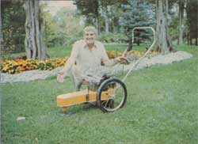 Dick Raymond with an original DR (restricted) Trimmer/Mower |
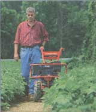 The 11 hp Troy-Bilt Big Red Tiller |
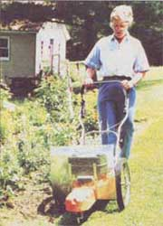 The ""Pro Model"" Trimmer/Mover from DR |
|
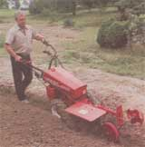 Gravely's ""2-wheeled Walking Tractor. |
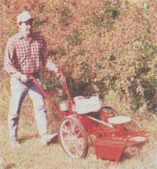 The DR (restricted) Field and Brush Mower |
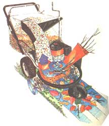 Bear Cat's innovative Vac-N-Chip Pro. |
|
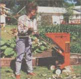 Two Troy-Bilt innovations, the 5 hp sicklebar |
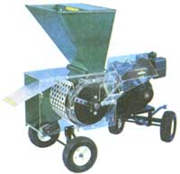 PTO Horse-Logsplitter |
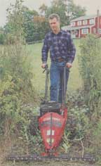 The patented swinging-flail rotor in Simplicity's line of shredders. |
|
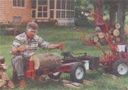 Troy-Bilt's rear-tined Roto Tiller (above) and their 8 hp Pro Chipper. |
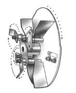 |
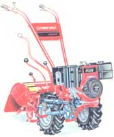 |
|
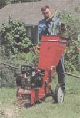 |
|
|